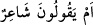
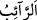

Bunun nedeni onların aşırı inadcı olmalarından yahut hitabet ehlinin ilk dönemlerinde
bu metodu kullanmış olmalarından ileri gelir. Şunu da bil ki, şiirle ilgili verdiğim bu
tarihi bilgiler Yâsin suresinde ayrıntılı olarak bildirilenlerin hâricinde benim şu anki
kanâatlerimdir.
İbn Şeyh şöyle demiştir: __WORD__ âyeti daha önceki âyete nazaran Peygamberimiz
(s.a.)’i kâhinlik ve mecnunluktan şairliğe terakki ettirmesi açısından mühimdir. Zira
şâir, mecnun ve kâhinden daha az yalan söylemesi ile maruftur. Bir rivâyete göre “En
güzel şiir, içerisinde en çok yalanı barındırandır” denmiştir. Müşrikler, Rasûlullah’ın
şiir kuvvetinin kendilerine galebe çalmasından korktukları için, “Biz şimdi onunla
tartışıp söz düellosu yapmayız. Ondan önceki şairler gibi ölmesini, arkadaşlarının da
dağılmasını bekler, aynı genç yaşta ölen babası gibi onun da ölmesini ümidle bekler ve
bu hususta sabrederiz” demişlerdir. Bu açıdan onların:
“Onun, zamanın felâketlerine uğramasını bekliyoruz mu diyorlar?” sözü dikkat
çekmektedir. Âyette geçen “terabbus” beklemek, “rayb” ise nefisleri endişeye sokan şey
yâni nefisde zamanın musîbetleri ve başa getireceği sıkıntıları oluşturan tevehhüm
anlamındadır. Buradaki “rayb” kelimesi __WORD__ (râib) anlamında olup bu kelimeye “rayb”
denmesinin sebebi, bir halde dâim olmaması ve devamlı olarak kaygan bir zeminde
bulunmasıdır.
Müfredât’da Raybu’d-dehr tâbirinin anlamının “zamanın hâdiseleri” olduğu
belirtilmiştir. Bu kelimeye rayb denmesinin diğer sebepleri, onda istenmeyen bir hâdise
beklentisi olduğundan veya kişinin bir beklenti içerisinde olup daha sonra o tevehhüm
ve beklentisinin boşa çıkmasından kaynaklanmaktadır. Bu nedenle Allah Teâlâ,
“(Kitabın) kendisinde hiçbir şüphe yoktur” (el-Bakara 2/2) buyurmuştur.
“İrâbe” ise kişinin beklenti içinde olduğu bir şeyde sû-i zanna düşürüp onun tahayyül
ettiği iyi düşüncenin ortadan kalkmasına neden olmaktır.
Âyet-i kerîmedeki “raybe’l-menûn” tâbiri ile “zamanın felâketleri”nin kasdedilme
maksadı, bu felaketlerin olmasında şüphe duyulması amacına değil, onun meydana
gelme zamanından şüphede bulunmaya matuftur. Zira insan devamlı olarak varlığı
cihetinden değil, vakti cihetinden zamanın musîbetleri ile yüz yüzedir. Bu mânâya
mâtûfen şâir şöyle demiştir:
İnsanlar mutlak surette bakâları olmadığını bilmişlerdir.
Ancak keşke onlar bildikleri kadar da amel etmiş olsalardı!
Menün; zaman, ölüm ve çokça başa kakma anlamlarında olup zevcinin malı için
evlenip daha sonra da başa kakan kadına da “menûne” ve “mennâne” denilmektedir. Bir
rivâyete göre de âyetteki “menûn” ölüm mânâsında, “rayb” ise ölümün sancıları
anlamındadır. Menûn kelimesi aslında “bir şeyi kesmek” anlamında bir kelimedir. Zira
zaman insanın kuvvetlerini, ölüm de ideallerini ve ömrünü keser. Müfredât’da da
canlıların sayılarını noksanlaştırması ve kuvveti kesmesi nedeniyle “menûn”un ölüm